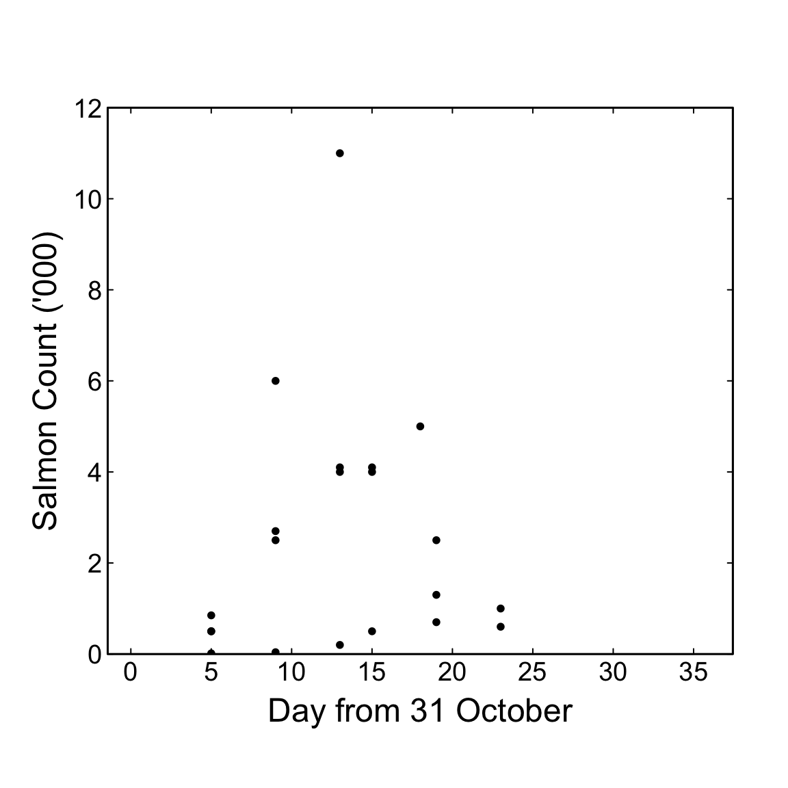
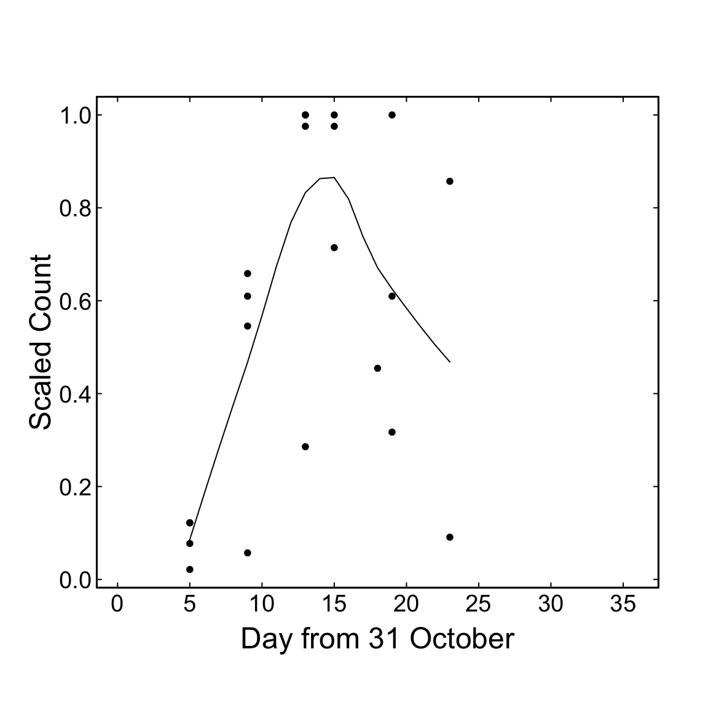
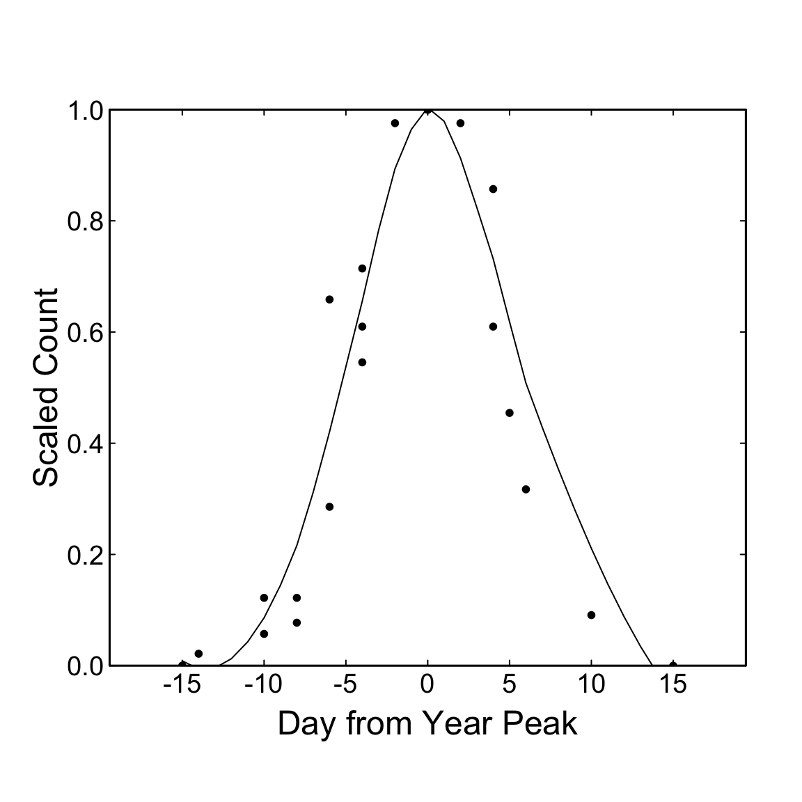
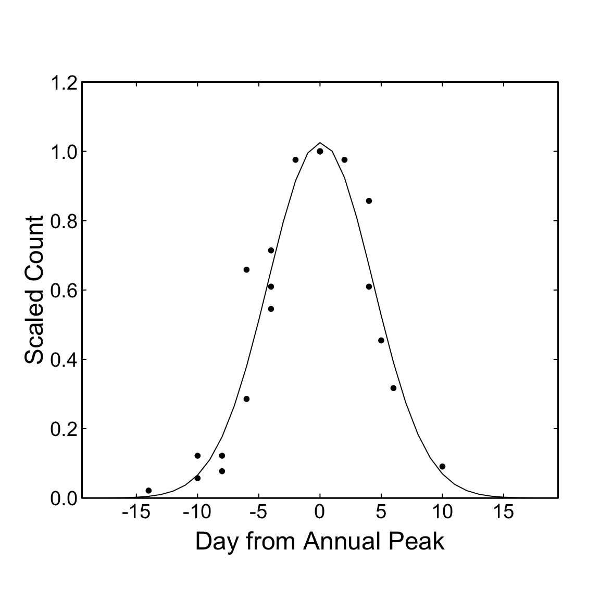
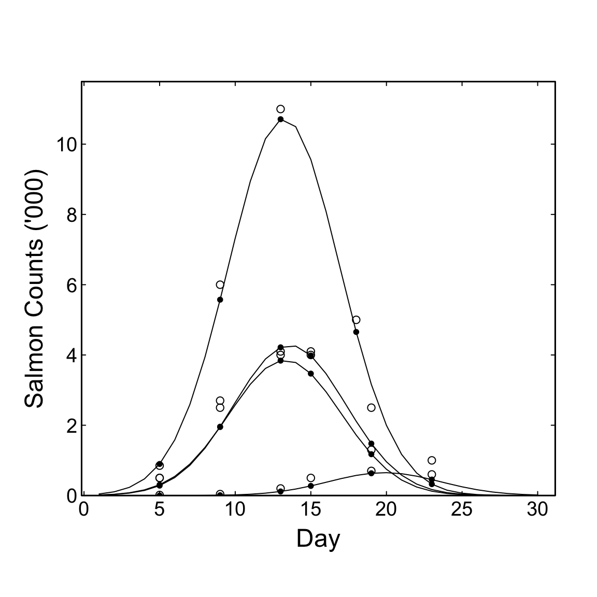

A simplistic examination of surveys that estimate the number of salmon spawners in a river.
Introduction
This blog describes a simplistic examination of surveys that estimate the number of salmon spawners in a river. Several surveys are conducted each year (methods irrelevant here). Two goals
Convince biologists that analyzing all of the data at once is better than one year at a time. So we will be looking for an overall pattern of salmon, a shape, and extracting a years effect on that pattern – which will include yearly abundance of salmon, the goal of the surveys.
Compare the results of conventional year-by-year approach to the result from years-together.
The analysis is deliberately simple, with more sophisticated approaches planned for subsequent blogs.
Area Under the Curve (AUC)
Convention determines salmon spawner abundance by linear interpolation between survey estimates each year separately, with assumptions about timing for zero abundance before and after the surveys: a trapezoid(Parken, Bailey, and Irvine 2003). There is an alternative, where all years are combined to
determine the general temporal pattern of spawner abundance (“salmon days), perhaps Gaussian if early arrivals and late survivors viewed as simply rare, perhaps Beta if ordained zero.
given (a), estimate the change to that shape for each year, perhaps skewed to be earlier or later than the pattern across all years,
given (a) and (b), determine the total abundance for each year, and
from (a), (b), and (c), determine the observation error for individual surveys, \(\sigma_{obs},\) perhaps as a fixed percentage error (\(\sigma_{obs}=20\%\) of true abundance, implying a log transform) rather than an absolute error (\(\sigma_{obs} = 20\) spawners).
Example
Test Dataset
As test data, the abundance estimates for 21 surveys over 4 years from Parken et al. 2003 (Figure 1). The numbers are reproduced only approximately (Table 1), and plotted in Figure 2 with the observations from all years combined.
Figure 1: Plot of trapezoids from salmon spawner surveys from Parken et al (2003).
dat <-data.frame(year=c(rep(1996,5),rep(1997,5),rep(1998,6),rep(1999,5)), day=c(5,9,13,18,23, 5,9,13,15,19, 5,9,13,15,19,23, 5,9,13,15,19),count=c(850,6000,11000,5000,1000, 500,2700,4000,4100,2500,15,40,200,500,700,600, 500,2500,4100,4000,1300) )kbl(dat)
Table 1: Salmon counts as read from Parken et al. (2003).
year
day
count
1996
5
850
1996
9
6000
1996
13
11000
1996
18
5000
1996
23
1000
1997
5
500
1997
9
2700
1997
13
4000
1997
15
4100
1997
19
2500
1998
5
15
1998
9
40
1998
13
200
1998
15
500
1998
19
700
1998
23
600
1999
5
500
1999
9
2500
1999
13
4100
1999
15
4000
1999
19
1300
SetPar()plot(dat$day, 0.001*dat$count, xlim=c(0,36),ylim=c(0,12),yaxs="i",xlab='Day from 31 October', ylab="Salmon Count ('000)")Axis34()

Figure 2: Salmon counts as read from Parken et al. (2003) by day with all years combined.
Scale by Maximum Count
First guess at shape is to scale observations by maximum each year, then fit a loess curve (Figure 3). It is necessary to sort the data by day for loess. Zeros were added outside the dates of observations, as per using a trapezoid.
xa <-by(dat$count,dat$year, max) # get maximums by yearxb <-by(dat$count,dat$year, length) # number of observations by year# one value per year, copy for each obs in a year.xc <-NULL# temporaryfor(j in1:4) xc <-c(xc,rep( xa[[j]], xb[[j]]) ) dat$max <- xc dat$scaled <- dat$count / dat$maxxa <- dat[order(dat$day), c("day","scaled")] # extract and sortlo <-loess(scaled ~ day, data=xa) # fit smoother to sorted data# range for resulting smooth line is range of observed daysdays =5:23loPred <-predict(lo, data.frame(day = days) ) # all days in rangeloPred <-data.frame(pred=loPred,day=days) # not just observed daySetPar()plot(scaled~day,data=xa, xlim=c(0,36),xlab='Day from 31 October', ylab='Scaled Count')lines(loPred$pred ~ loPred$day ) Axis34()

Figure 3: Salmon counts scaled (from 0 to 1) by the maximum count each year.
Shift Observations by Day of Maximum
One of the years has a large change in timing, adding scatter to the preceding plot. We can reduce that scatter shifting (aligning) observations according to date of maximum abundance within years (Figure 4). This is inaccurate (a hueristic) but demonstrates a parameter (timing) that will be estimated better subsequently. The variable shift is the shifted value for day of observation, with negative values and the peak will be at day shift. Apply the shift and plot.
peak <-dat$day[ which(dat$count == dat$max)] # peak day by year xa <-NULL# temporaryfor(j in1:4) xa <-c(xa,rep( peak[j], xb[[j]]) ) dat$shift <- dat$day - xa xa <- dat[order(dat$shift), c("shift","scaled")] # extract and sort# add zeros outside range of obs.xa0 <-rbind (c(-15,0), xa, c(15,0))lo <-loess(scaled ~ shift, data=xa0) # smoother #,span=0.5)loPred <-predict(lo, data.frame(shift=-15:15) )loPred <-data.frame(pred=loPred,shift=c(-15:15))# redo preceding plotSetPar()plot(scaled~shift,data=xa0, xlim=c(-18,18), ylim=c(0,1), yaxs="i",xlab='Day from Year Peak', ylab='Scaled Count')lines(pred ~shift, data = loPred ) # Axis34()

Figure 4: Salmon counts shifted and scaled (from 0 to 1) by the maximum count, and the corresponding day, within each year.
Assume Gaussian
Figure 4 suggests a symmetric Gaussian (“normal”) probability density distribution (PDD):
with \(\mu \approx 0 \text{ and } \sigma \approx 5\) days as noticed from crude scaling of abundance and shifting of time for each year.
As well as the parameters \(\mu\) and \(\sigma,\) additional parameter \(\eta\) is required for total abundance, the integral of the PDD and proportional to maximum abundance.
The integral of the Gauss-Laplace function \[\int{e^{-x^2}} = (2\pi)^{1/2} \approx 2.5\] For a PDD, the integral must be 1, and this is effected by the term \((2\pi \sigma )^{-1/2} \approx 0.4.\) This is the maximum of the Gaussian PDD at \(\mu = 0\) when \(\sigma = 1.\) If the abundance \(\eta= 1/0.3989422804 = 2.505528\) then the maximum for the curve is 1 and the integral \(\approx 2.5.\) Similarly, when \(\sigma = 2\) the maximum is 1 when \(\eta= 2/0.4 = 5\) and for \(\sigma = 5, ~ \eta=12.5\)
In the scaled and shifted data the maximum was assigned to be 1 and it can be observed that \(\sigma \approx 5.\) Fitting a Gaussian distribution with 3 parameters \((\eta,\mu,\sigma)\) to all years combined, and after the rough scaling and shifting, is accomplished by the following chunk.
This chunk is a non-linear fit, obtained by searching for the parameters that have the lowest SSQ, the lowest sum of squared differences between observed and predicted (fitted) values. A function Gssq() is defined for this; it uses the built-in function stats::dnorm (normal probability density) to predict \(\hat{y}\) for each observed day, given trial estimates for \(\mu,~ \sigma,~ \eta\) and determines the SSQ. Then Gssq() is a parameter for the built-in function stats::optim that searches for value of the parameters that minimize SSQ. The other parameters for optim() are (1) a starting guess at parameters, and (2) the observed data: 21 values of day and abundance.
Fitting is by searching for the set of parameters that minimizes the sum of squared differnces (SSQ) between predicted \(\hat{y}\) and observed \(y\), \[ SSQ = \sum{(y - \hat{y})^2}\]
Given the SSQ at best fit, we can determine how well the data is fitted by a Gaussian, \(\hat{y},\) compared to fitting the mean abundance over all days, \(\bar{y},\) a default model, by determining the reduction in SSQ: \[ r^2 = 1- \frac{\sum (y-\hat{y})^2}{\sum (y-\bar{y})^2 }.\]
Gssq <-function(par, xy){ x <- xy[,1]; y <- xy[,2]; eta <- par[1]; mu <- par[2]; sigma <- par[3]; yhat <- eta *dnorm(x,mu,sigma) # make the prediction ssq <-sum( (y-yhat)^2) # to be minimizedreturn(ssq)}# starting guess for the search: eta=12.5, mu=0, sigma=5Gfit <-optim(par=c(12.5, 0, 5), Gssq, xy=xa )# pull out the fitted parameterspar = Gfit$par; pr =round(par,2)# Gfit$value is SSQ: fitted to observed. Get SSQ: mean to obs.SSQ <-sum( (xa[,2] -mean(xa[,2]))^2 ) # y minus mean(y)r2 <-round (1- Gfit$value/SSQ, 2) # percent reduction in SSQcat('r^2 = ', r2, ', eta = ',pr[1], ', mu = ',pr[2],', sigma = ', pr[3], '\n', sep='')-> r^2=0.94, eta =11.02, mu =0.05, sigma =4.29
The result provides \(\sigma \approx 4.3\) which is a more narrow spread than noticing the inflection point in the Gaussian, at \((1 ~\sigma),\) was about \(\pm5\) from the mean. The fitted maximum will necessarily be close to 1 because of our scaling, but in this case greater than 1, given \(\sigma / 0.4 = 10.72\) but \(\eta = 11.2,\) due to our rough scaling.
The fitted line is compared visually to the data by the following chunk. A smooth Gaussian curve is plotted by estimating a value for 18 days before and after the mean day.
x <-c(-18:18) # 37 points for a smooth(er) line.pred <- par[1] *dnorm(x, par[2],par[3]) # eta, mu, sigmaSetPar()plot(scaled~shift,data=xa, xlim=c(-18,18), ylim=c(0,1.2),yaxs="i",xlab='Day from Annual Peak', ylab='Scaled Count')lines(pred ~ x)Axis34()

Figure 5: Gaussian probability density fitted to the scaled and shifted counts.
Year Effects
The preceding identified the overall pattern as Gaussian with \(\sigma \approx 4.3.\) If \(\sigma\) is assumed to be known and constant across years, as Figure 5 suggests, then only two observations per year are required to estimate total abundance: \(\eta_t,~ \mu_t.\) To clarify: a single observation of early and small abundance cannot distinguish a small run with average timing from a big run that is late; one subsequent observation can make that distinction (in theory, if observations precise and salmon behave).
This test dataset has 5 or 6 observations per year, so precision is improved and over-fitting is reduced compared to (a) fitting 3 parameters to each year separately, or (b) interpolating to an aribitrary trapezoid that requires arbitrarily placed zeros.
The next step estimates 2 parameters for year effects: \(\eta_{year}\) (abundance) and \(\mu_{year}\) (timing) for each of 4 years, and 1 estimate for \(\sigma\) (spread, constant) from 21 observations. This is a ratio of \(2.\bar{3}\) data points to parameters, and could be improved by adding more years: for 20 years @ 5 surveys/year the ratio would be \(11.\bar{1}.\)
# GssqAll <- function(par, dat){# # dat columns: year, day, count# # par is 9 parameters# eta <- par[1:4]; # abundance each year, length 4# mu <- par[5:8]; # timing each year, length 4# sigma <- par[9]; # spread every yearr, length 1# years = unique(dat[,1]) # 1996 to 1999# ybar <- numeric(length(dat[,1])) # the predicted, length 21# m = 0 # starting index for output vector ybar# for (j in 1:length(years)) { # 4 years: 1996 to 1999# k <- which(dat[,1] == years[j]) # find rows in dat for each year# for (i in k){ # each observed day in that year# m <- m+1 # advance index for output# ybar[m] <- eta[j] * dnorm(dat[m,2],mu[j],sigma)# # predicted: abundance times normal(day, timing, spread)# }# }# ssq <- sum( (dat[,3]-ybar)^2) # result of trial values for par# return(ssq)# }GssqAll <-function(par, dat){# dat columns: year, day, count# par is 9 parameters eta <- par[1:4]; # abundance each year, length 4 mu <- par[5:8]; # timing each year, length 4 sigma <- par[9]; # spread every yearr, length 1 years =unique(dat[,1]) # 1996 to 1999 ybar <-numeric(length(dat[,1])) # the predicted, length 21for (j in1:length(years)) { # 4 years: 1996 to 1999 k <-which(dat[,1] == years[j]) # find rows in dat for each year ybar[k] <- eta[j] *dnorm(dat[k,2],mu[j],sigma) # all of k# predicted: abundance times normal(day, timing, spread) } ssq <-sum( (dat[,3]-ybar)^2) # result of trial values for parreturn(ssq)}# par is eta(4), mu (4), sigma (1)par <-numeric(9)# starting guess for search is eta = 2*sigma*max.# where max is max observed count in each year.par[1:4] <-c(2*4.3*11000, 2*4.3*4100, 2*4.3*700, 2*4.3*4100)# result: 94600 35260 6020 35260# start for yearly timing (mu) is day of observed maximum each yearpar[5:8] <-c(15,15,19,15)# start for spread, sigma, is from preceding fit.par[9] <-4.3# the required precision of fit, reltol, is reduced from the default.control <-list(reltol=0.01)Gfit <-optim(par, GssqAll, dat=dat[,1:3], control )par = Gfit$par; # 9 fitted parameterspr[1:4] =round(par[1:4], 0) # rounded for printing.pr[5:9] =round(par[5:9], 2) a <-data.frame (Year=1996:1999,eta=pr[1:4],mu=pr[5:8], sigma=pr[9])kbl(a)
Year
eta
mu
sigma
1996
99334
13.22
3.72
1997
39584
13.82
3.72
1998
6024
19.32
3.72
1999
35662
13.20
3.72
# r^2 for overall fit, all 4 years at once.SSQ <-sum( (dat[,3] -mean(xa[,2]))^2 ) # SSQ from meanr2 <-1- Gfit$value / SSQr2 <-100*round (r2,2) # as percent# print( paste('r^2 = ', r2,'%', sep='') ) # save for text
The resulting fit, with \(r^2 =\) 99%, minimizes SSQ over all years, despite large differences in abundance within and between years. Perhaps large abundances have a larger effect than small on the fit determined by SSQ. To investigate, determine the fit for each year as separate \(r^2\) values.
eta <- par[1:4]; mu <- par[5:8]; sigma <- par[9]; year <-unique(dat[,1]) # 1996 to 1999nyear <-length(year) #4 yhat <-NULL# will be 21 predicted r2 <-numeric(nyear)for (j in1:nyear) { k <-which(dat[,1] == year[j]) # index for rows for this year yhat[k] <- eta[j] *dnorm(dat[k,2], mu[j], sigma) # a vector# dat[,2] is day. dat[,3] is count ssq_fit <-sum( (dat[k,3] - yhat[k])^2) ssq_raw <-sum( (dat[k,3] -mean(dat[k,3]) )^2) r2[j] <-1- ssq_fit / ssq_raw}a <-data.frame(Year=year, Abundance=round(eta,0), r2=round(r2,2) ) kbl(a)
Year
Abundance
r2
1996
99334
0.99
1997
39584
0.81
1998
6024
0.82
1999
35662
0.93
Compare the estimates of “fish days” from trapezoidal AUC and from fitting Gaussian distributions.
a1 <-round(mean(abs(a$PercentDiff)),0)#print( paste('The mean difference is ', a1, '%.',sep='' ))
The mean difference in annual estimates of fish days is 33%.’
The four Gaussian distributions, and the observed and predicted counts, are plotted in Figure 6 by the following chunk.
# GssqAllPred <- function(par, dat){# # same as GssqAll but returns the predictions. AND smooth curves.# eta <- par[1:4]; mu <- par[5:8]; sigma <- par[9];# years <- unique(dat[,1]) # 1996 to 1999# nyears <- length(years)# x <- 1:30 # days for smooth# ybar <- numeric(dim(dat)[1] ) # predicted for each day# smooth <- NULL # predicted as smooth curve# m = 0 # row of output, total 21# for (j in 1:nyears) { # 1 to 4, 1996 to 1999# k <- which(dat[,1] == years[j]) # find rows in a for each year# for (i in k){ # each row in that year# m <- m+1 # row of output# ybar[m] <- eta[j] * dnorm(dat[m,2],mu[j],sigma)# }# smooth <- c(smooth, eta[j] * dnorm(x,mu[j],sigma)) # }# a <- list(ybar=ybar, smooth=smooth)# return(a)# }x <-c(1:30) # days of September# yhat is predicted counts for the days observedymax=1.1e-3*max(yhat) # plot as thousandsSetPar()plot(1e-3*yhat ~ dat[,2], xlim=c(1,30), ylim=c(0, ymax), yaxs="i",xlab='Day', ylab="Salmon Counts ('000)" )points(1e-3*dat[,3] ~ dat[,2], pch=1) # observedfor (j in1:4){ y <- eta[j] *dnorm(x, mu[j], sigma) # smooth curvelines(1e-3*y ~ x)}Axis34()

Figure 6: Four Gaussian curves with the same spread describe the observed salmon abundance. 5 or 6 observations in each year estimate just 2 parameters: abundance and timing.
Discussion
The overall result of fitting Gaussians to four years of data simultaneously produced \(r^2=99\%\) which seems excellent, but only superficially. At least we have
estimates of how well the data are fitted by the model;
a better way to interpolate between observations, the continuous Gaussian; and
removed the need for, and effect from, arbitrary estimates for timing of zero abundance.
But there is a tendency for
larger abundances to have better fit (\(r^2\) by year), suggesting that large observations have a bigger effect than small; and
years with the largest difference between Gaussian and AUC have lower fit.
The range of observations, from 15 to 11,000, suggests that the sampling error, the precision of observations, is proportional to the observation, as in \(\pm 20 \%,\) as opposed to a fixed error, as in \(\sigma=20\)fish. Ordinary linear regression assumes fixed error, and the non-linear fitting mimics that. Proportional sampling error, where the error is essentially a multiplier, implies the fit should be to log abundances, so that log(error) is additive.
Next Step
Saved for a subsequent post: Determine how to fit the log of the Gaussian to the log of the counts. I discovered a mathematical trick that makes this simple.
Down the Road
These regressions should be more rigorous, as Bayesian multi-level regression. And what about multiple rivers in the same area that are surveyed in the same years – can the model can be extended to river effects similar to year effects?
References
Parken, Charles K., Richard E. Bailey, and James R. Irvine. 2003. “Incorporating Uncertainty into Area-Under-the-Curve and Peak Count Salmon Escapement Estimation.”North American Journal of Fisheries Management 23 (1): 78–90. https://doi.org/10.1577/1548-8675(2003)023<0078:IUIAUT>2.0.CO;2.